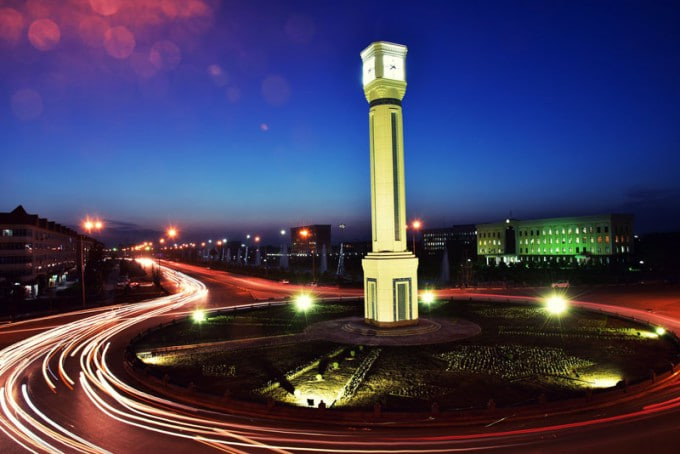
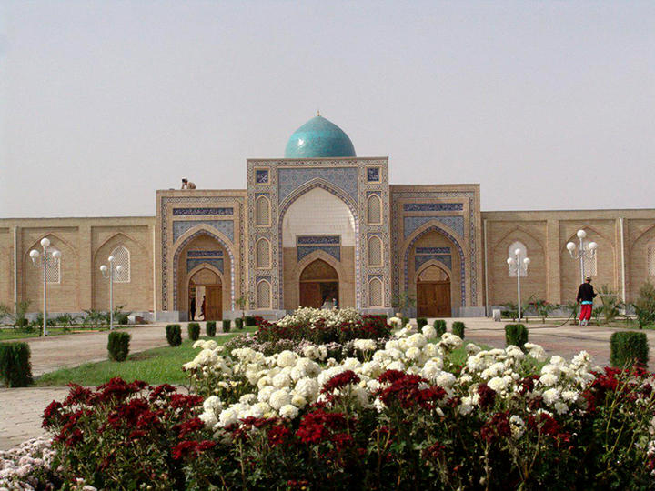
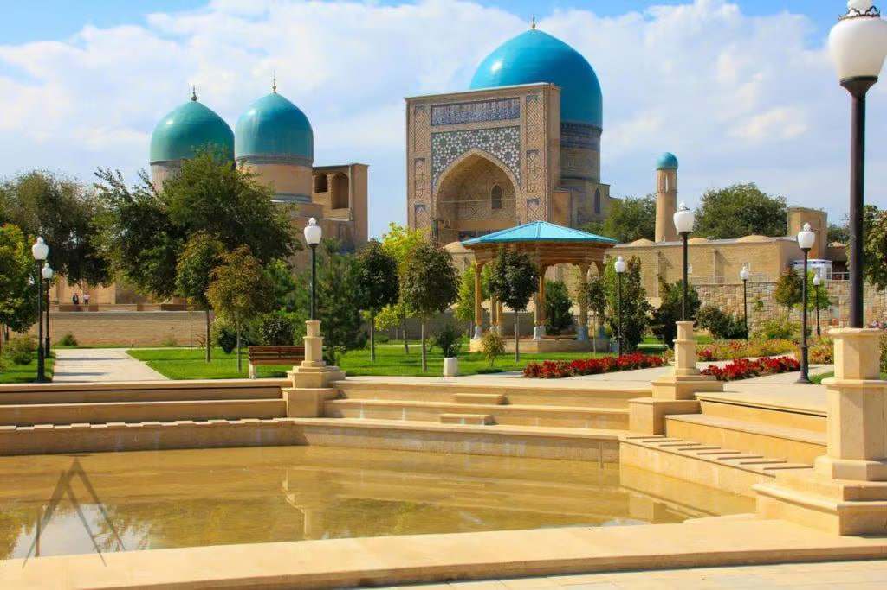
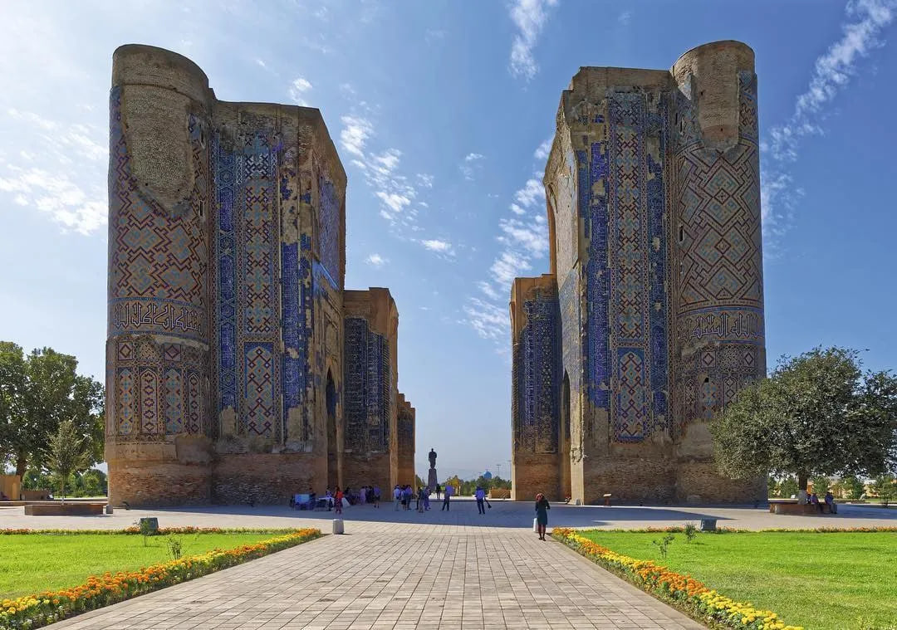
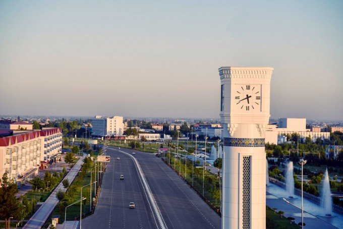
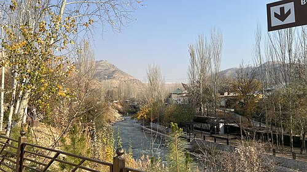
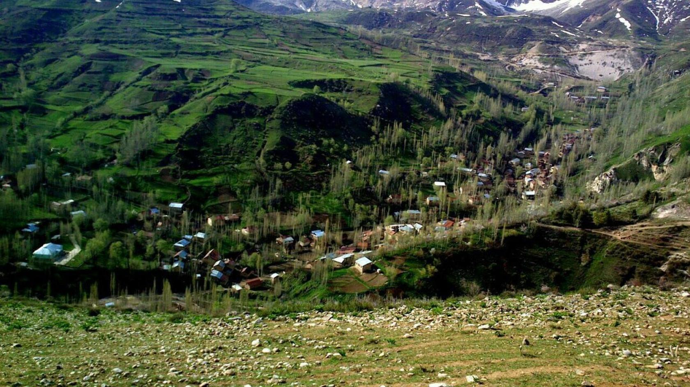

Qashqadaryo viloyati
Qashqadaryo — O`zbekistonning eng qadimiy va betakror hududlaridan biri.
Uning tarixi ham, tabiiy go`zalligi ham juda boy va rang-barang.
Bu viloyat faqat tarixi bilan emas, balki tabiiy go`zalligi bilan ham maftunkor.


Kitob, Yakkabog`, Shahrisabz tomonlardagi tog`li hududlar toza havosi,
buloqlari va tabiiy sokinligi bilan mashhur.Kitob, Shahrisabz va Yakkabog` tumanlari
Qashqadaryoning eng go`zal va tarixiy hududlaridan hisoblanadi.
Bu hududlar tog` etaklarida joylashgani sababli tabiati sernam,
havosi toza va manzaralari juda betakror Shahrisabz o`zining Oqsaroyi va
temuriylar davri yodgorliklari bilan mashhur bo`lsa,Kitob va Yakkabog` ilmiy,
qishloq xo`jaligi va dam olish maskanlari bilan tanilgan.

Oqsaroy Amir Temurning eng ulug` va hashamatli saroylaridan biri bo`lgan. Yoshi bugungi kunda 640 yildan oshgan


Naxshab va Qarshi: Viloyat markazi Qarshi shahri 2700 yillik tarixga ega bo`lib,
qadimda Naxshab deb atalgan va Buyuk Ipak yo`li ustida joylashgan.
"Qarshi" nomi: Shahar nomi turkiy tilda "istehkom" yoki "saroy" degan ma`noni anglatadi,
bu Amir Temur davrida qurilgan mustahkam inshootlar bilan bog`liq.
Kitob rasadxonasi: Kitob tumanida dunyodagi beshta xalqaro kenglik stansiyalaridan biri —
Kitob balandtog` rasadxonalar majmuasi faoliyat yuritadi.
Hisor tog`lari: Viloyatning sharqiy qismida joylashgan tog`larning eng baland nuqtalari
metrgacha yetadi, bu yerda noyob o`simlik va hayvonot dunyosi bor.
Qashqadaryo viloyati tabiiy resurslari: Viloyatda Kitob davlat geologiya
qo`riqxonasi mavjud bo`lib, u noyob geologik kesmalar va qazilma boyliklarga boy.
Ekoturizm: Hisor tog` etaklaridagi qishloqlarda o`ziga xos oilaviy
mehmonxonalar va shifobaxsh suvlarga ega bo`lgan dam olish maskanlari mavjud.


Qashqadaryo viloyati — O`zbekiston Respublikasi tarkibidagi viloyat. 1924-yil 1-noyabrda tashkil etilgan. Qashqadaryo viloyati o`zbekiston tarkibida eng birinchi tashkil etilgan viloyatdir. Respublikaning janubi-g`arbida Qashqadaryo havzasida, Pomir-Oloy tog` tizmasining g`arbiy chekkasida, Amudaryo va Zarafshon daryolari, Hisor va Zarafshon tizma tog`lari orasida joylashgan. Shimoli-g`arbdan Buxoro va janubi-sharqdan Surxondaryo viloyatlari, janubi-g`arb va g`arbdan Turkmaniston Respublikasi, sharqdan Tojikiston Respublikasi hamda Samarqand viloyati bilan chegaradosh. Maydoni - 28,5 ming km². Aholisi - 3,697,658 kishi (3-o`rin) (2025-yil 1-oktyabr holatiga ko`ra). Viloyat hokimi Murotjon Azimov (2024-yil 6-noyabrdan hozirgi kungacha ).